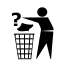

Template:Delete
 This template has been nominated for deletion. To discuss it, please visit the nomination page.
Do not remove this tag until the deletion nomination is closed. Reason for the nomination: No reason given. PLEASE give a reason, or this item will end up in Category:Incomplete deletion requests. | |
No description yet available.
Usage
{{Delete
|reason =
|subpage =
|day =
|month =
|year =
}}
Note: The easiest way to nominate individual images for deletion is to click the "Nominate for deletion" link in the side bar. There's no need to fill this out manually.
- do not "subst" this template
- do not delete this template, delete the pages and files that embed it
day, month, and year — the current day of the month, month as a word in English only, and four-digit year, such as 1, January, and 2000, or for today:
{{Delete
|reason =
|subpage =
|day = 14
|month = October
|year = 2022
}}
You only need to fill out the "subpage" parameter if you create the deletion request at a different subpage of Commons:Deletion requests than the image name. For example, if you nominate Image:Foo.jpg for deletion, and you create the subpage Commons:Deletion requests/Image:Foo.jpg, then you don't need to fill out the parameter. But if you nominate that image as part of a mass nomination, you will have to fill it out. For example you nominate all the images uploaded by a particular user for deletion. Then instead of creating 50 different subpage, you create just one, Commons:Deletion requests/Images uploaded by User XYZ, and then on all of the relevant images, you put this template with the parameter subpage=Images uploaded by User XYZ.
Template parameters
| Parameter | Description | Default | Status | |
|---|---|---|---|---|
reason1 | reason | The explanation for why the page referencing this template needs to be deleted. | empty | required |
subpage2 | subpage | The subpage of Commons:Deletion requests on which the image nominated for deletion is listed (see above for explanation) | empty | optional |
day4 | day | empty | required | |
month5 | month | Nomination month as an English month name (e.g. “January”) | empty | required |
year6 | year | empty | required | |
Additional information
The template is intended to be used in the following namespaces: all namespaces
The template is intended to be used by the following user groups: no user group specified
See also
Localization
This template is localized through {{Autotranslate}}. The layout of the template can be found under Template:Delete/layout.
To add your language to the list of languages supported by this template, please copy the code of Template:Delete/en (or any other language version you prefer to translate) and replace the text strings in there (the form below can be used to create a translation, the English version is preloaded in the edit box). Please change the parameter lang from en (or whatever language you are translating) to the language code of your language.